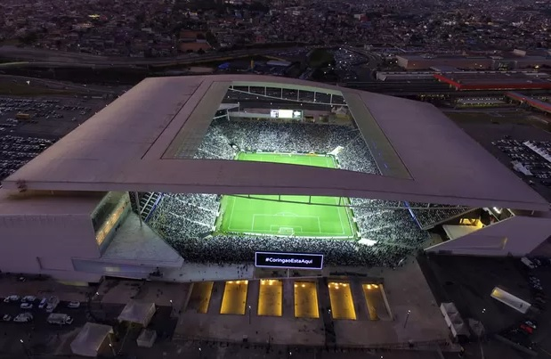
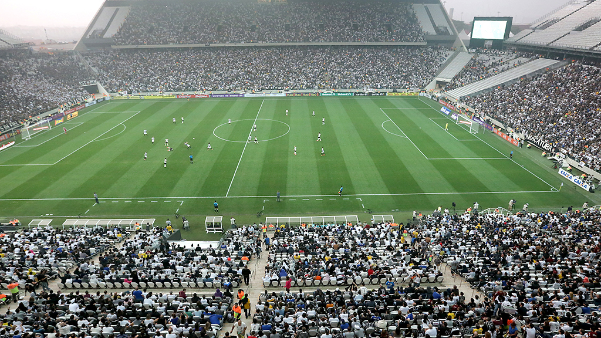
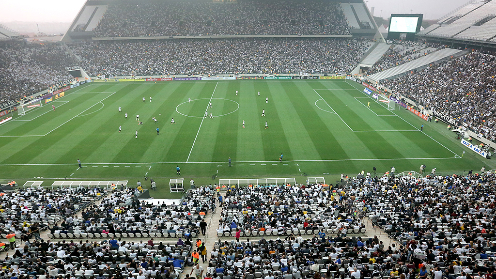

Sport Club Corinthians Paulista
Clube
O Sport Club Corinthians Paulista (mais conhecido como Corinthians, e pelos apelidos de "Timão" e "Coringão") é um clube multiesportivo brasileiro da cidade de São Paulo, capital do estado homônimo.Foi fundado como uma equipe de futebol no dia 1 de setembro de 1910 por um grupo de operários do bairro Bom Retiro. Seu nome foi inspirado no Corinthian FC de Londres, que excursionava pelo Brasil, sendo chamado pela imprensa brasileira da época de Corinthian's team.
Arena
Arena Corinthians, popularmente conhecida como Itaquerão, é um estádio de futebol localizado no distrito de Itaquera, na Zona Leste do município de São Paulo, Brasil. De propriedade do Sport Club Corinthians Paulista, sua capacidade é de 45 000 lugares, sendo o 14º maior estádio do Brasil. A arena foi inaugurada oficialmente em 18 de maio de 2014, Construído pela Odebrecht entre 2011 e 2014, a obra tinha previsão de custo inicial em 820 milhões de reais, mas seu preço final atingiu quase 1,2 bilhão de reais. Ao todo, a arena possui capacidade para 48 234 lugares, contendo Bares e Restaurantes, Estacionamentos, Área de Eventos, Tecnologia da Informação e Comunicação entre outras coisas mais.

 

Atual jogadores do clube
Jadson
|
Carlos Gilberto
|
Bruno Méndez
 |
Vágner Love
 |
Mateus Vital
 |
Pedrinho
|
Danilo Avelar
 |
Walter Leandro
 |
Ralf
|
Fagner
|
Gabriel
 |
Ramiro Moschen
 |
Cássio Ramos
 |
Ángel Romero
 |
Redes Sociais